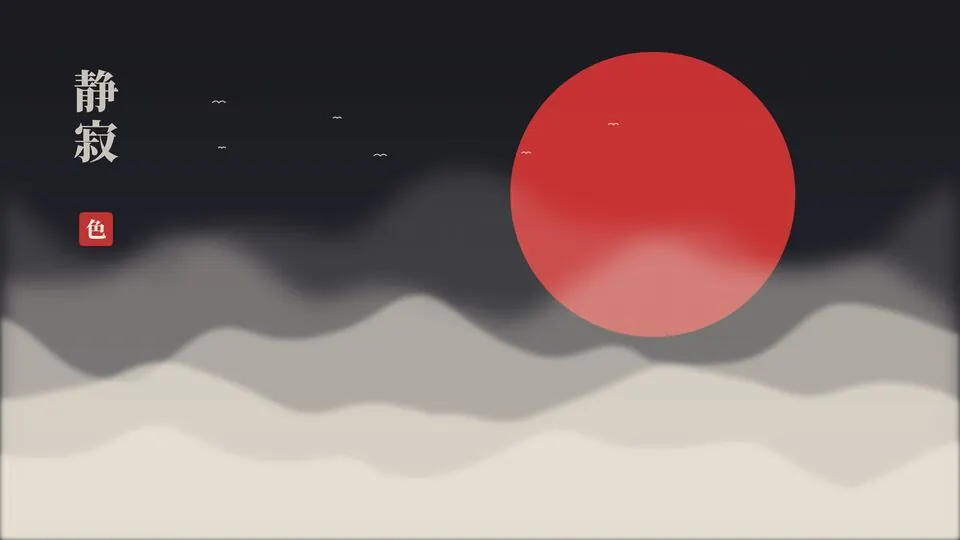

Cada fondo, una estética única
Irokai lee los colores de tu fondo y viste a juego bordes, barra, terminal, prompt, VS Code y el reproductor de música. 43 fondos originales: 43 looks distintos.
Irokai convierte tu escritorio Linux en algo que da gusto mirar: pon cualquier fondo y todo se viste a juego —colores, bordes, animaciones, terminal, VS Code y tu música—. Se configura solo. 43 fondos originales, 13 estéticas y un solo comando para instalar.
Nada de editar archivos ni copiar dotfiles de foros. Irokai lo hace por ti, cada vez que cambias de fondo.
Uno de los 43 originales o el tuyo: una foto, un dibujo, un vídeo o un enlace.
Detecta el acento de la imagen y la estética de su carpeta: samurái, retro, sakura, manga…
Bordes, barra, terminal, prompt, logo, animaciones, VS Code… en menos de un segundo.
Elige una y mira cómo cambia hasta esta página. Cada fondo trae además sus propios colores.

Tinta negra, papel y sangre. Japón tradicional y sobrio.
Pulsa ‹ ›: con cada fondo cambian los colores. Eso es la estética única por fondo.
Vídeos grabados en un escritorio real con Irokai. Sin trucos de edición.
Irokai lee los colores de tu fondo y viste a juego bordes, barra, terminal, prompt, VS Code y el reproductor de música. 43 fondos originales: 43 looks distintos.
Tu foto, un dibujo, un vídeo o un enlace: fondo añadir y Irokai elige estética y colores por ti. Sin tocar un solo archivo.
Pulsa Super+M: estéticas, fondos, pantallas, sonidos, animaciones, guía y mantenimiento.
Busca entre todos tus fondos y míralos antes de ponerlos. Siguiente o aleatorio con un atajo.
Cinco perfiles: suave, rápida, rebote, dramática y mínima. Cada estética trae el suyo.
Visual Studio Code queda instalado y configurado, y cambia de color con cada fondo: bordes, barras y editor. Sin tocar nada.
Reproductor y visualizador en el escritorio que se tiñen con tu fondo, y letras sincronizadas en la barra. Ponlos donde quieras.
Más de 70 atajos con buscador en español (Super+H). Capturas con Super+Shift+S, como en Windows.
Prompt japonés, bienvenida con el logo de tu estética, bonsái animado, visualizador de música…
Super+G quita los efectos pesados al instante; Super+B alarga la batería.
Bucles hechos con código y tus propios vídeos. Se pausan solos al jugar a pantalla completa.
Super+Shift+E: arrastra el reproductor y el visualizador donde quieras o añade reloj, tiempo…
Dock, centro de control, letras de canciones en karaoke y actualizaciones, todo integrado.
Solo externa, solo portátil, espejo o las dos. Izquierda, derecha, arriba o abajo. Siempre a su máxima frecuencia.
Ligeros (menos de 2 MB), en bucle perfecto y originales. Y puedes poner cualquier vídeo tuyo.
# tras descargar el zip: $ unzip irokai-1.1.0.zip && cd irokai $ ./install.sh
Sin suscripciones. Las actualizaciones de la versión 1.x están incluidas.
Precio de lanzamiento. Aún no está a la venta: déjanos tu email y te avisamos el día que salga.
Un PC con CachyOS (recomendada la edición Hyprland) u otra distro basada en Arch con Hyprland 0.55 o superior y Noctalia. El instalador comprueba todo y te avisa si falta algo.
Descomprimes el zip, abres una terminal y ejecutas ./install.sh. Instala lo necesario desde los repositorios oficiales, guarda una copia de tu configuración y lo deja todo listo. Tarda unos minutos.
Sí. Antes de tocar nada se guarda una copia de tu configuración, y ./uninstall.sh deshace la instalación sin borrar tus fondos.
Sí, y es lo mejor: pon cualquier imagen o vídeo con fondo añadir (o cópialo en la carpeta mios) y Irokai lee sus colores, elige la estética que mejor le va y configura todo el escritorio a juego. No tienes que tocar ningún archivo.
43 fondos originales creados por Irokai (39 fijos en 12 estilos y 4 animados), libres de derechos de terceros. Además, con irokai fondos buscar puedes buscar y descargar tú mismo fondos SFW de Wallhaven para tu uso personal.
Instala Spotify (cliente oficial) y Visual Studio Code (de Microsoft, bajo su licencia) y los configura. VS Code se tiñe con los colores de tu fondo. Spotify funciona tal cual con las teclas multimedia, el reproductor del escritorio y las letras en karaoke. Si quieres que también se vista a juego, ejecuta irokai spotify-tema activar: usa Spicetify, que modifica la app de Spotify (sus condiciones no lo permiten), así que solo se activa si tú lo decides tras leer el aviso.
El instalador te pide la clave del correo de compra. También puedes hacerlo luego con irokai licencia activar <clave>. Vale para 3 ordenadores tuyos y puedes liberarla con irokai licencia desactivar.
Sí. Los efectos están optimizados y los fondos animados se pausan solos con juegos o vídeos a pantalla completa. Si quieres el máximo rendimiento, Super+G activa el modo juego, y Super+B el modo ahorro.
No. Irokai es para Linux (CachyOS / Arch + Hyprland). Si quieres probarlo, instala CachyOS en otro disco o en una máquina virtual.
Sí: 9 € una vez, con las actualizaciones de la versión 1.x incluidas. Sin suscripciones.
Es contenido digital de descarga inmediata, así que al comprar aceptas perder el derecho de desistimiento. Aun así, si Irokai no funciona como se describe en tu sistema compatible y no lo podemos arreglar, te devolvemos el dinero. Detalles en Reembolsos.
La licencia es personal: puedes instalarlo en tus propios ordenadores, pero no redistribuirlo. Si les gusta, mándales el enlace 💛